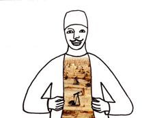

|
SHIRIN DAMERJI
MEINE GROßMUTTER, DER NAFTATSCHI
UND DIE ÖLFELDER | D 2005 | 7'30''
Format: DVD
Originalsprache: Deutsch
Drehbuch: Shirin Damerji
Bild: Shirin Damerji
Schnitt: Shirin Damerji, Brigitte Weindorf (Beratung)
Ton: Weryton-Studios
Damerji erzählt das abenteuerliche Leben der Großmutter – eine scheinbar private Familiengeschichte, mit verblüffenden Parallelen zur politischen Gegenwart. Über den Bericht authentischer Erlebnisse hinaus, entfaltet sich die Wirkung eines Märchens. Es geht um sagenhaften Reichtum und bittere Armut, hilflose Waisenkinder und gleichgültige Pflegeeltern, den bösen Wolf, einen Wohltäter, der sich als Intrigant entpuppt, und eine wundersame Rettung. Diese Geschichte mit vielen überraschenden Wendungen erzählt Shirin Damerji in bestechend klaren, leichten und erhellend-erheiternden Zeichnungen.
VOM MINIROCK ZUR ABAYA | D 2006 | 12'
Format: DVD
Originalsprache: Deutsch
Kamera: Shirin Damerji
Schnitt: Shirin Damerji
Ton: Shirin Damerji
Interview:Shirin Damerji
Aufzeichnung eines Gesprächs, das die Künstlerin mit ihrem Vater geführt hat. Der promovierte Archäologe erzählt in lebendiger Sprache über sein Heimatland, dem Irak, geht der Frage nach Funktion und Bedeutung des Schleiers nach und räsoniert über die wechselhafte Geschichte der Emanzipation der irakischen Frau. In die allgemeinen Bemerkungen zur politischen Entwicklung des Landes fließen immer wieder seine persönlichen Erinnerungen und Erlebnissen ein. Dass die blonden Haare seiner Frau echt sind, treibt ihn ebenso um wie die Tatsache, dass die gläubige Muslimin gegen seine persönlichen Vorlieben ein Kopftuch trägt.
Shirin Damerji, geb. 1971 in Landshut. Ausbildung zur Goldschmiedin, Gesellenzeit, dann Studium an der Kunstakademie München. 2005 Diplom, Lothar-Späth-Preis. Lebt und arbeitet in München.
Filme: Chrilleriche 2000 | Auf wackligen Beinen 2001 | München und die Frauen mit den schwarzen Schleiern 2002 | Das trübe Wässerchen 2003 | Puppenoperette 2003 | Meine Großmutter, der Naftatschi und die Ölfelder 2005 | Vom Minirock zur Abaya 2006 Girls from Gazalija 2006
Ausstellungen: diverse Screenings der Videoarbeiten in München z.B. „Gestrandet“-Odeonsplatz, Filmmuseum, Artothek, im Spiegel, Kunstverein, Rathausgalerie, JVC-Festival, ZKMax, Arabesque Superiör- Lothringerladen 13
zurück
|